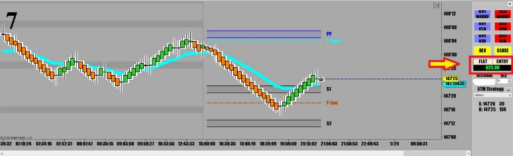

오후 3시 장외마켓 오픈하자마자 어제와 마찬가지로 장대봉 등장.
곧바로 V자 반등.
긴가민가하다 적은양으로 붙었는데 다행히 수익.
장외마켓에서는 매매를 안하는게 원칙인데 어제 오늘 이상하게 돌아가고 있다.
가능하면 아침 5시20분 채권시장 개장하면 매매하는게 좋다.
* 장대음봉 후에 바닥에서(어제 저가) Pin Bar가 나오는 바람에 안할려다가 할 수 없이 매매.
매매원칙상 매매기준선과 이격이 심하게 벌어진 경우 외에는 역매매는 거의 안하지만 급락뒤에 V자 반등에는 가끔 들어간다.
특히 바닥에서 Pin Bar가 뜨면 예외없다.
